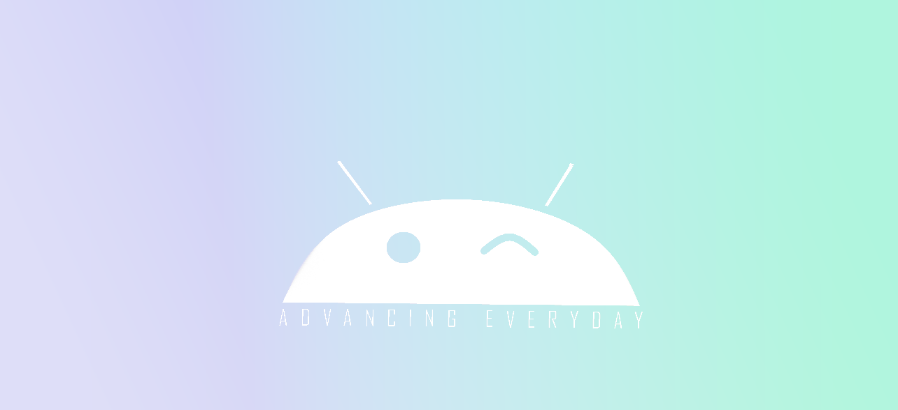

﴾BACKSTORIES OF LOGOS﴿
-


LOGOS FROM UDEMY
These all were made by me by practising from Udemy. The teacher taught us to make
these logos on Illustrator. It took me around an hour to make each. It made my Illustrator skills stronger and better.
-


LOGOS FROM MONOGRAMS
This was a part of Coursera assignment but it can fit here more because these both can be seen as logos too.
-



LOGOS FOR IMAGINARY COMPANY
I made these all on the request of my brother for an imaginary company and the first two ones are variations of what appears on starting a mobile phone.
-


NEUTRAL LOGOS
It was a project I assigned to myself: making logos with no specific motive. These are both made on Illustrator.
-

LILLIAM ICE CREAM LOGO DESIGN
This was also a self-project. I made this by taking a request from a fake client who required a logo for
his ice-cream shop. As it was related to ice-cream, I made it using colorful palette and also giving it an enticing look to attract children particularly.It was made on Illustrator.